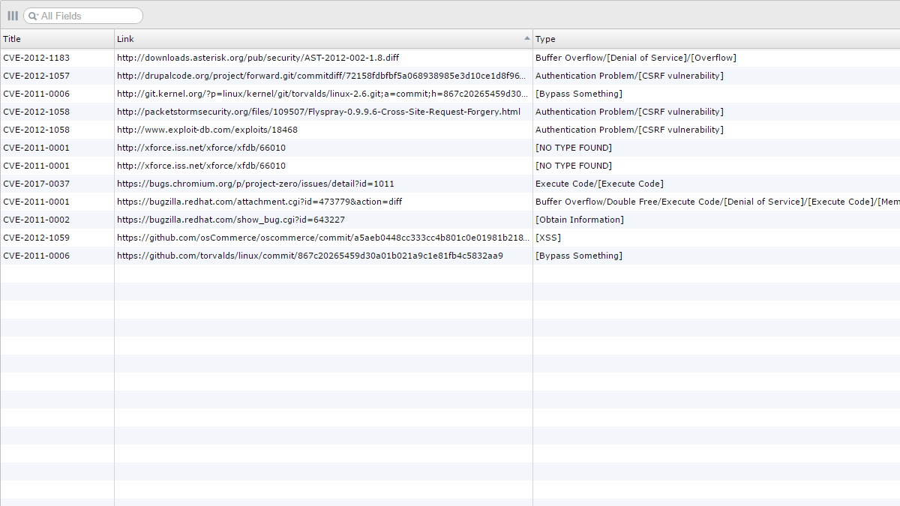

Figure 1: Program Running

A project I worked on during my summer internship in Fasoo. This Webcrawler takes the xml files provided from the Common Vulnerabilities and Exposures (CVE) website, and outputs a database file that contained the urls that contain vulnerability related source codes categorized by vulnerability types.
The challenge of this project was to write an algorithm that actually distinguishes plain text from source codes. The purpose of the crawler was to gain examples of codes to get a better understanding of the vulnerabilities.